mosquitto-ui Handbuch
mosquitto-ui ist eine Web-Oberfläche für den MQTT-Broker Eclipse Mosquitto 2.1: Geräte und Rechte verwalten, live sehen, was durch den Broker geht, Bridges, Zertifikate, Backups und Benachrichtigungen einrichten, ohne eine Konfigurationsdatei von Hand anzufassen.
Überblick
Was die UI kann
Zugriff
Clients, Gruppen und Rollen von Dynamic Security, ein ACL-Tester, Anmeldung mit Access-Tokens (JWT).
Live-Blick
Topic-Baum mit Werten und Grafiken, Sitzungen jedes Clients, Aufzeichnung einzelner Clients, das Log des Brokers.
Broker
Optionen und Listener mit Prüfung vor dem Übernehmen, Nachrichtenregeln, Bridges mit Victron-GX-Pairing.
TLS
Zertifikate per ACME (Let's Encrypt, ZeroSSL, Google) mit DNS-Challenge, automatische Verlängerung und TLS-Listener.
Sicherheit im Betrieb
Verschlüsselte Backups nach SFTP, FTP, S3, Verzeichnis oder Mail, Mails bei Ausfällen und auffälligen Log-Zeilen, Protokoll aller Änderungen.
Umzug
Import vorhandener password_file, acl_file, mosquitto.conf und mosquitto.db.
Wie sie aufgebaut ist
Zwei Teile laufen nebeneinander, als Docker-Container oder als systemd-Dienste:
- Der Broker ist Mosquitto 2.1 mit Dynamic Security (Benutzer und Rechte) und zwei Plugins von mosquitto-ui: inspect (Sitzungen, Aufzeichnung, Nachrichtenregeln) und token-auth (Anmeldung mit JWT).
- Der Agent startet Mosquitto und führt aus, worum die UI bittet: eine neue Konfiguration mit
mosquitto --test-configprüfen, übernehmen, neu laden oder neu starten, Zertifikate einspielen. Lehnt der Broker eine Konfiguration ab, gilt wieder die alte. So braucht die UI weder den Docker-Socket noch Root-Rechte. - Die UI spricht mit dem Broker per MQTT (als Benutzer
adminüber$CONTROLund$SYS) und mit dem Agenten über Dateien im geteilten Verzeichnis. Ihre eigenen Daten (Einstellungen, verschlüsselte Geheimnisse, Verlauf) liegen im Statusverzeichnis.
Installation
Voraussetzungen
- Ein Linux-Server (amd64 oder arm64), mit Docker und Docker Compose oder mit systemd für die Installation ohne Docker.
- 512 MB Arbeitsspeicher für die UI, der Broker braucht wenig.
- Offene Ports:
1883(MQTT),8883(MQTT über TLS, sobald ein Zertifikat da ist),8080für die UI oder besser nur der Reverse Proxy auf443. - Für die Anmeldung nichts weiter (UI-Benutzer mit Passwort). Wer will, nimmt dazu einen Identity Provider: Keycloak, authentik und andere mit OpenID Connect, oder Konten bei Google, Microsoft, GitHub und Co.
- Für ein Zertifikat: eine Domain und ein DNS-Anbieter mit API (acme-dns oder PowerDNS).
Mit Docker Compose
Ein Server braucht nur zwei Dateien aus dem Repository: deploy/compose.yaml und deploy/env.example.
Verzeichnis anlegen und die Dateien holen:
sudo mkdir -p /opt/mosquitto && cd /opt/mosquitto # compose.yaml und env.example aus deploy/ hierher kopieren cp env.example .env chmod 600 .env.envausfüllen. Das Wichtigste:Variable Bedeutung MOSQUITTO_PASSWORDPasswort des Broker-Benutzers admin, mindestens 12 Zeichen (openssl rand -base64 24). Nur beim allerersten Start gelesen; mit einem kürzeren startet der Broker ohne Benutzer und lehnt jeden ab.MOSQUITTO_UI_AUTHso lassen. localhält den lokalen Login immer an, der Notzugang (siehe Anmeldung).OIDC_ISSUER,OIDC_CLIENT_ID,OIDC_CLIENT_SECRETnur von Installationen vor 0.26: werden beim ersten Start ein Provider. Neue Installationen lassen sie leer. MOSQUITTO_UI_SECRET_KEYVerschlüsselt Geheimnisse und signiert Backups ( openssl rand -base64 32). Getrennt vom Server aufheben.MOSQUITTO_UI_VERSIONVersion beider Images, besser fest als latest.Starten:
docker compose up -d docker compose logs -f mosquitto-uiDas erste Passwort von
adminsteht in:docker compose exec mosquitto-ui cat /var/lib/mosquitto-ui/initial-password
Die Daten liegen in vier Volumes: data (Benutzer, Rechte, Retained Messages, Zertifikate), state
(Einstellungen der UI), shared (Konfiguration der UI für den Broker) und backups (lokale Backup-Ziele).
Die UI läuft schreibgeschützt und ohne Rechte als eigener Benutzer.
Ohne Docker (systemd)
An jedem Release hängt mosquitto-ui-<Version>.tar.gz. Das Skript darin installiert zwei systemd-Dienste und baut
Mosquitto 2.1.2 aus dem Quelltext, weil die Distributionen meist noch 2.0 haben. Getestet mit Debian 12 und 13 und Rocky Linux 9;
Ubuntu und Fedora gehen denselben Weg.
V=0.26.0
curl -fLO https://github.com/alexsxb/mosquitto-ui/releases/download/v$V/mosquitto-ui-$V.tar.gz
curl -fLO https://github.com/alexsxb/mosquitto-ui/releases/download/v$V/mosquitto-ui-$V.tar.gz.sha256
sha256sum -c mosquitto-ui-$V.tar.gz.sha256
tar xzf mosquitto-ui-$V.tar.gz && cd mosquitto-ui-$V
sudo ./install.shDas dauert beim ersten Mal ein bis zwei Minuten. Am Ende steht, wo die UI läuft und wo das erste Passwort liegt:
==> mosquitto-ui 0.26.0 runs on http://mqtt01:8080
MQTT: port 1883, broker user admin, password in /etc/mosquitto-ui/broker.env (MOSQUITTO_DYNSEC_PASSWORD)
Login: see /var/lib/mosquitto-ui/state/initial-password (goes away after the first login)| Dienst | Was | Läuft als |
|---|---|---|
mosquitto-ui-broker | Agent und Mosquitto, Log mit journalctl -u mosquitto-ui-broker | Agent root, Mosquitto mosquitto |
mosquitto-ui | die UI, gehärtete Unit (nur ihre drei Datenverzeichnisse beschreibbar) | mosquitto-ui |
Optionen von install.sh: --port (UI, Standard 8080), --no-start,
--skip-packages. Einstellungen stehen danach in /etc/mosquitto-ui/mosquitto-ui.env; nach einer Änderung
sudo systemctl restart mosquitto-ui. Ein Mosquitto-Paket der Distribution darf nicht gleichzeitig auf 1883 laufen:
sudo systemctl disable --now mosquitto.
Wichtig: MOSQUITTO_UI_SECRET_KEY aus /etc/mosquitto-ui/mosquitto-ui.env an einem
sicheren Ort aufheben. Ohne ihn lassen sich verschlüsselte Einstellungen, lokale Benutzer und die Signatur der Backups auf einem neuen
Server nicht mehr lesen.
Alle Pfade, Update und Entfernen: Pfade, Updates und docs/standalone.md.
Anmeldung
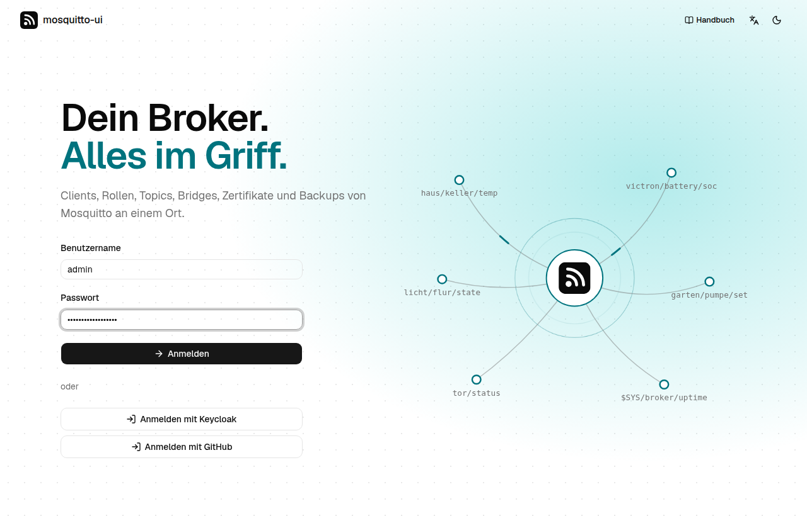
Zwei Wege hinein, beide auf der Seite Anmeldung eingerichtet: UI-Benutzer mit Passwort (der lokale Login) und beliebig viele Identity Provider.
Der erste Start
- Solange kein Provider an ist, gilt der lokale Login. Der erste Start legt
adminan, mitMOSQUITTO_UI_LOCAL_AUTH_INITIAL_PASSWORDoder einem erzeugten Passwort ininitial-passwordim Statusverzeichnis. Die Datei verschwindet nach der ersten Anmeldung. - Weitere Benutzer auf der Seite UI-Benutzer. Jeder darf alles.
- Passwörter mindestens 12 Zeichen, gespeichert als PBKDF2-SHA256 mit 600 000 Durchläufen. Nach 5 Fehlversuchen in 15 Minuten für einen Namen oder von einer Adresse wartet jeder weitere Versuch.
- Die Sitzung endet nach 8 Stunden ohne Anfrage, spätestens 7 Tage nach der Anmeldung, und sofort mit einem neuen Passwort.
Identity Provider
Unter Anmeldung → Provider hinzufügen gibt es Vorlagen für Keycloak, authentik, Authelia, ZITADEL, Pocket ID, Kanidm, Google, Microsoft Entra ID, Apple, GitHub, GitLab, Gitea/Forgejo, Okta, Auth0, Amazon Cognito und jeden anderen Provider mit OpenID Connect. Beim Provider wird immer ein vertraulicher Client mit Authorization Code Flow angelegt. Am Beispiel Keycloak:
- Clients → Create client, OpenID Connect, Client-ID z. B.
mosquitto-ui. - Client authentication an (vertraulicher Client), Standard flow an.
- Valid redirect URIs: die Rückruf-Adresse, die der Dialog zeigt,
https://<Host der UI>/auth/sso/keycloak(oderhttps://<Host der UI>/*). Valid post logout redirect URIs:https://<Host der UI>/*. - Eine Rolle oder Gruppe für die Verwalter anlegen, z. B.
mosquitto-admin, und sie im Dialog unter Wer darf hinein? eintragen. - Adresse des Realms, Client-ID und das Secret aus Credentials in den Dialog übernehmen, mit Testen prüfen.
Sobald ein Provider an ist, lässt sich der lokale Login ausschalten. Wer sich ausgesperrt hat, setzt MOSQUITTO_UI_AUTH=local
und startet die UI neu: Dann gilt der lokale Login wieder, egal was die Seite sagt. Passwort vergessen: UI stoppen,
users.json im Statusverzeichnis löschen, mit MOSQUITTO_UI_AUTH=local starten: admin entsteht neu.
Von Versionen vor 0.26
Wer bisher QUARKUS_OIDC_* (bzw. OIDC_* in .env) gesetzt hatte, findet beim ersten Start von 0.26
denselben Provider auf der Seite Anmeldung, mit der Rolle aus MOSQUITTO_UI_ADMIN_ROLE. Der lokale Login bleibt aus. Neu ist die
Rückruf-Adresse /auth/sso/keycloak: Mit https://<Host>/* als Valid redirect URI passt sie schon.
Für Keycloak liegt unter docker/keycloak-theme/mosquitto-ui ein Login-Theme im Stil der UI; es wird nur für diesen Client gewählt
(Login settings → Login theme).
HTTPS und Reverse Proxy
Die UI spricht nur HTTP. Davor gehört ein Proxy mit TLS. Wichtig sind X-Forwarded-* für die Weiterleitungen der Anmeldung
und ungepufferte Antworten für die Live-Seiten (Topics, Logs: Server-Sent Events).
Caddy
mqtt-ui.example.com {
reverse_proxy 127.0.0.1:8080
}nginx
location / {
proxy_pass http://127.0.0.1:8080;
proxy_set_header Host $host;
proxy_set_header X-Forwarded-For $proxy_add_x_forwarded_for;
proxy_set_header X-Forwarded-Proto $scheme;
proxy_buffering off;
proxy_read_timeout 1h;
}Der UI dann sagen, welchen Proxys sie glauben darf: im Docker-Setup TRUSTED_PROXIES in .env, ohne Docker die Zeilen
QUARKUS_HTTP_PROXY_* in mosquitto-ui.env einkommentieren. Nur über den Proxy erreichbar: QUARKUS_HTTP_HOST=127.0.0.1.
MQTT über einen Proxy: Leitet z. B. Traefik MQTT per TCP an den Broker, sieht der Broker nur die Adresse des Proxys. Auf der Seite Konfiguration gibt es dafür Listener für Proxy mit dem PROXY-Protokoll; der normale Port 1883 bleibt ohne.
Erste Schritte
- Anmelden, unter UI-Benutzer das Passwort ändern oder eigene Benutzer anlegen, und wer einen hat, den Identity Provider unter Anmeldung einrichten.
- Secret Key sichern (siehe oben).
- Rollen und Clients anlegen: zuerst eine Rolle mit den Topics, die eine Geräteart braucht, dann je Gerät einen Client mit Passwort, siehe Grundbegriffe. Mit dem ACL-Tester prüfen.
- Log einschalten: unter Konfiguration eine Log-Stufe wählen, nicht „Aus“.
- Zertifikat bestellen, dann richtet die UI den TLS-Listener auf 8883 ein (Zertifikat).
- Backup-Job anlegen und einmal von Hand starten (Backups).
- Benachrichtigungen: Mailserver und Empfänger eintragen, eine Testmail schicken.
Grundbegriffe
Clients, Gruppen, Rollen
Benutzer und Rechte verwaltet das Plugin Dynamic Security von Mosquitto. Die UI zeigt es so:
| Begriff | Was |
|---|---|
| Client | Ein Login am Broker: Benutzername und Passwort. Ein Gerät kann sich mit beliebiger Client-ID anmelden; mehrere Verbindungen mit demselben Login sind möglich. |
| Rolle | Eine Liste von Regeln (ACLs): welche Topics publiziert, empfangen, abonniert werden dürfen. |
| Gruppe | Mehrere Clients mit denselben Rollen, z. B. alle Shellys. |
| Standardzugriff | Was gilt, wenn keine Regel passt. Ab Werk: publizieren und abonnieren verboten, empfangen und abbestellen erlaubt. |
Regeltypen einer Rolle: publishClientSend (Client darf senden), publishClientReceive (Client bekommt Nachrichten),
subscribeLiteral/subscribePattern (abonnieren, genau oder mit +/#), unsubscribe….
In Topics stehen %c für die Client-ID und %u für den Benutzernamen.
Wildcard-Abos: Mosquitto 2.1 lehnt Abos mit + oder # ab, wenn die Rolle
„Wildcard-Abos erlauben“ nicht hat; der Client bekommt nur „subscription denied“. Die UI schaltet es für neue Rollen ein.
Der Benutzer admin ist für die UI da: Er darf $CONTROL und $SYS, aber keine
Nachrichten auf normalen Topics senden. Geräte bekommen eigene Clients. Die UI sperrt admin und was er braucht gegen
Änderungen, damit sie sich nicht selbst aussperrt.
Wie der Broker entscheidet
- Rollen des Clients, dann Rollen seiner Gruppen, jeweils nach Priorität (höher zuerst).
- Innerhalb einer Rolle kommt eine genaue Regel vor den Mustern, egal welche Priorität.
- Die erste passende Regel entscheidet. Passt keine, gilt der Standardzugriff.
Der ACL-Tester auf der Seite Regeln rechnet genau das nach und nennt die Regel, die entscheidet.
Wo die Konfiguration steht
mosquitto.confgehört dir (im Image fest, ohne Docker/etc/mosquitto-ui/mosquitto.conf). Sie lädt die Plugins und am Ende perinclude_dirdie Dateien der UI.conf.d/mosquitto-ui.confschreibt die UI: Optionen und Listener der Seite Konfiguration.conf.d/mosquitto-ui-bridges.conf: die Bridges, getrennt, weil Mosquitto ihre Passwörter im Klartext lesen muss.- Jede Änderung prüft der Agent vor dem Übernehmen. Manche Optionen wirken nur nach einem Neustart, der alle Clients kurz trennt; die UI sagt vorher, ob neu geladen oder neu gestartet wird.
Die Seiten
Links die Navigation in drei Gruppen: Übersicht zum Hinsehen, Zugriff für Rechte, Broker für Einstellungen. Oben rechts Sprache (Deutsch, Englisch, Französisch) und hell/dunkel, unten links das Benutzermenü mit Handbuch und Abmelden.
Dashboard
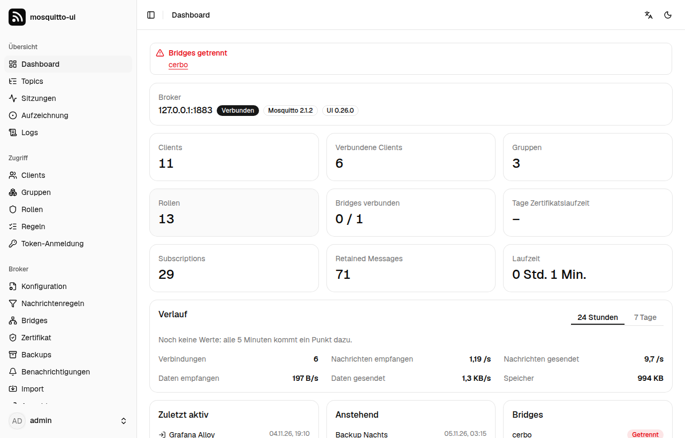
- Oben Warnungen: getrennte Bridges, Clients, die sonst verbunden sind und fehlen, gescheiterte oder überfällige Backups, ein ablaufendes Zertifikat.
- Kennzahlen aus
$SYS: verbundene Clients, Abos, Retained Messages, Laufzeit; die Kacheln führen zur passenden Seite. - Verlauf über 24 Stunden oder 7 Tage (Verbindungen, Nachrichten, Daten, Speicher), alle 5 Minuten ein Punkt.
Topics
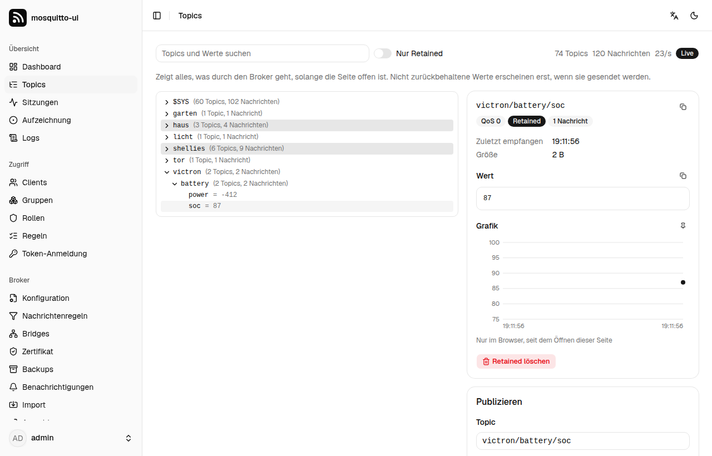
- Alles, was durch den Broker geht, als Baum mit letztem Wert, solange die Seite offen ist. Suche über Topics und Werte, Filter Nur Retained.
- Rechts: JSON formatiert, QoS, Retained, die Werte seit dem Öffnen, eine Grafik (Zahlen und Zahlen in JSON; anheften behält sie im Browser).
- Publizieren auf ein Topic, mit QoS und Retain. Erreicht auch Bridges, z. B.
W/…eines Victron GX. - Retained löschen für ein Topic und alles darunter, nach Bestätigung mit der Anzahl.
- Dafür legt die UI vorübergehend den Broker-Benutzer
mosquitto-ui-monitoran und entfernt ihn eine Minute nach dem letzten Betrachter.
Sitzungen
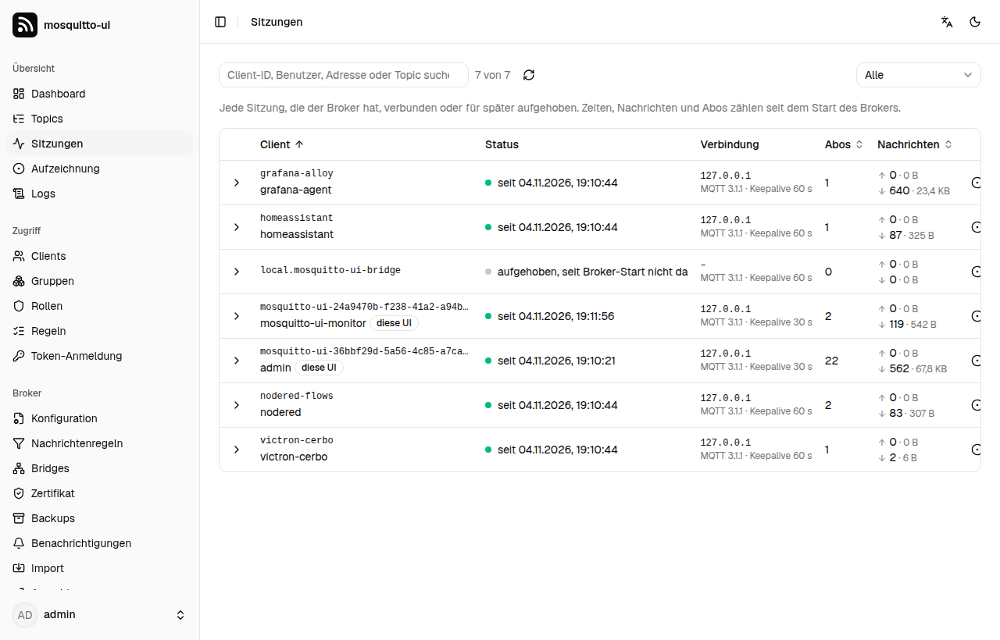
Jede Sitzung, die der Broker hat, verbunden oder für später aufgehoben (persistente Sitzungen): Client-ID, Benutzer, Adresse, Keepalive, Abos mit QoS, gesendete und empfangene Nachrichten mit Zeitpunkt. Aufklappen zeigt die Abos. Die Knöpfe rechts starten eine Aufzeichnung oder öffnen das Log dieses Clients. Zählung ab Start des Brokers.
Aufzeichnung
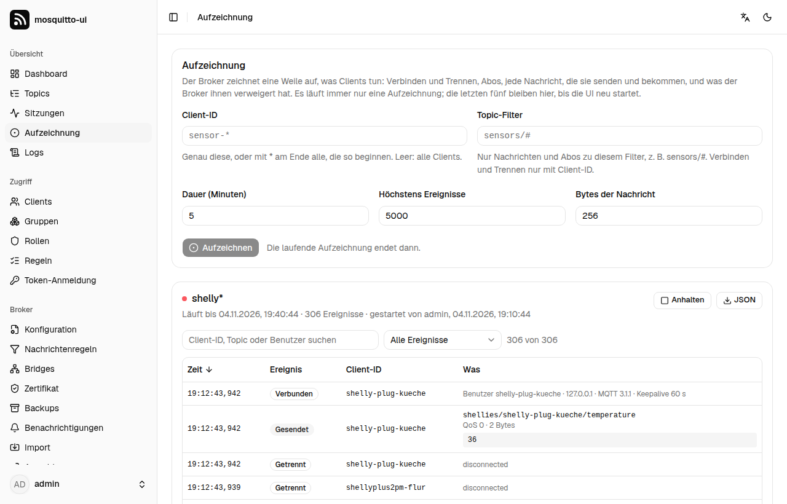
shelly beginnt.- Zeichnet bis zu einer Stunde auf, was Clients tun: Verbinden und Trennen mit Grund, Abos, jede gesendete und zugestellte Nachricht (die ersten Bytes), und was der Broker verweigert hat.
- Für eine Client-ID, alle mit Präfix (
sensor-*), einen Topic-Filter oder beides. Eine Aufzeichnung zur Zeit, höchstens 50 000 Ereignisse. - Download als JSON, Werte als Text oder base64. Die letzten fünf bleiben bis zum Neustart der UI.
Typischer Einsatz: Ein Gerät meldet keine Werte. Aufzeichnung auf seine Client-ID starten, Gerät neu starten: man sieht, ob es sich verbindet, was es abonniert und ob der Broker etwas verweigert.
Logs
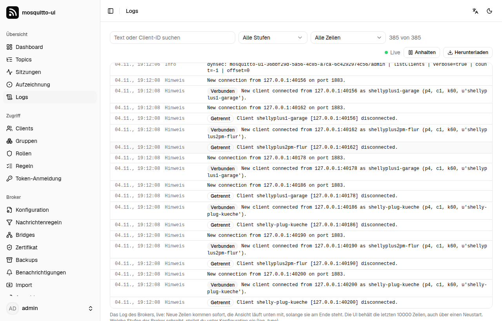
- Das Log des Brokers live wie
tail -f. Hochscrollen hält das Mitlaufen an, Anhalten friert die Ansicht ein. - Suche, Auswahl der Stufen mit Anzahl je Stufe, Filter (Fehler und Ablehnungen, Verbindungen, Abonnements, Bridges), Download.
- Stufen, die der Broker laut
log_typenicht schreibt, sind ausgegraut. Steht die Log-Stufe auf „Aus“, warnt die Seite. - Von Clients und Sitzungen aus öffnet Log nur die Zeilen eines Clients.
- Die UI behält 10 000 Zeilen, auch über einen Neustart. Debug-Zeilen gibt Mosquitto nie heraus, die stehen nur in
docker logsbzw. im Journal.
Clients
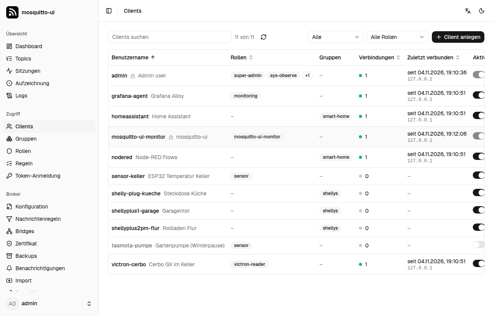
- Anlegen mit Passwort, Rollen und Gruppen; aktiv/inaktiv schalten (inaktiv: kann sich nicht anmelden).
- Je Zeile: bearbeiten, Passwort ändern, Trennen (alle Verbindungen dieses Logins; die meisten Geräte kommen sofort wieder), Log, löschen.
- Zuletzt verbunden mit Adresse merkt sich die UI selbst, sie schaut alle 15 Sekunden nach.
- Darunter eine eigene Tabelle für Clients, die mit einem Access-Token gekommen sind.
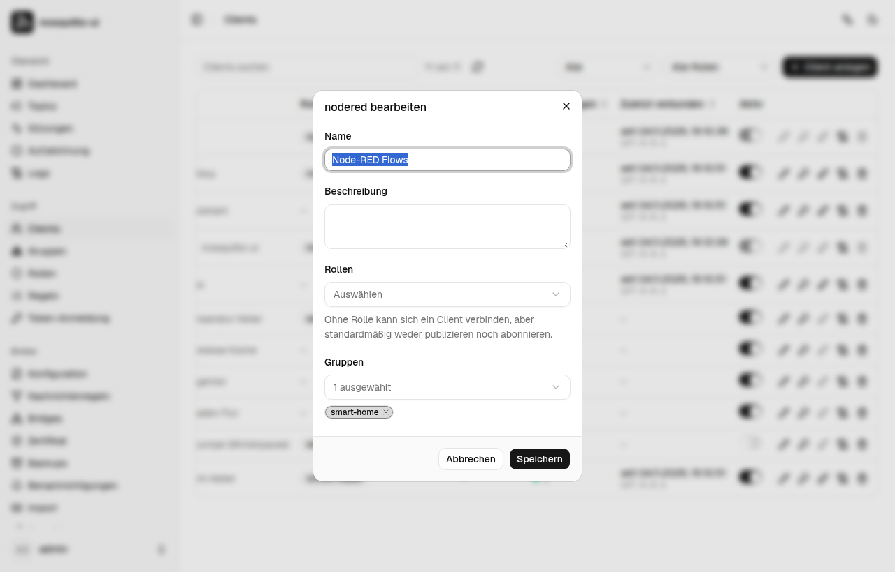
Gruppen und Rollen
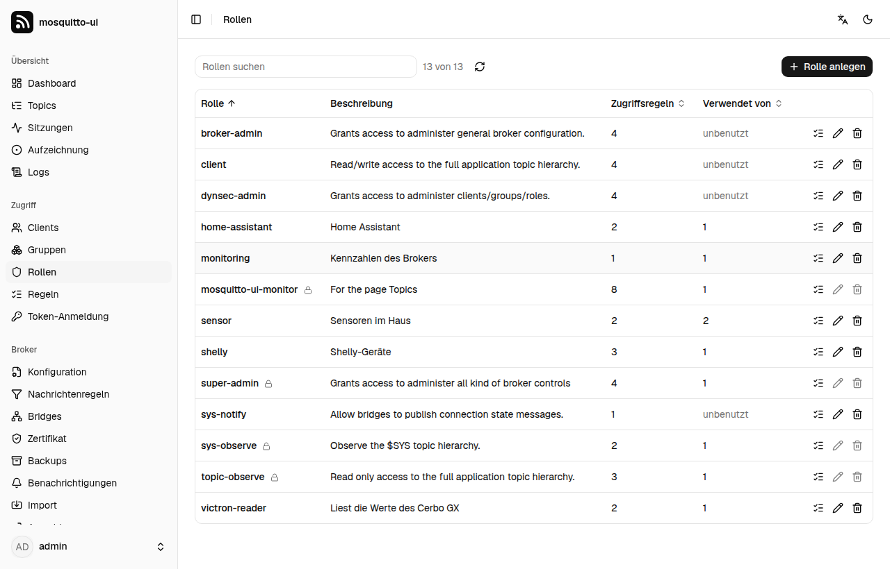
- Rollen: Regeln hinzufügen (Typ, Topic, Priorität, erlauben/verbieten), Wildcard-Abos erlauben.
- Gruppen: Rollen und Mitglieder; die Gruppe für anonyme Clients ist markiert.
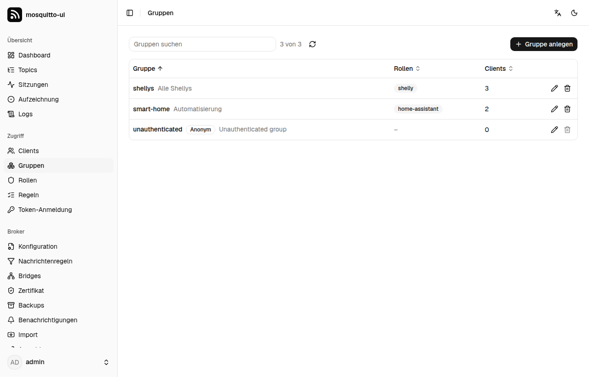
Regeln
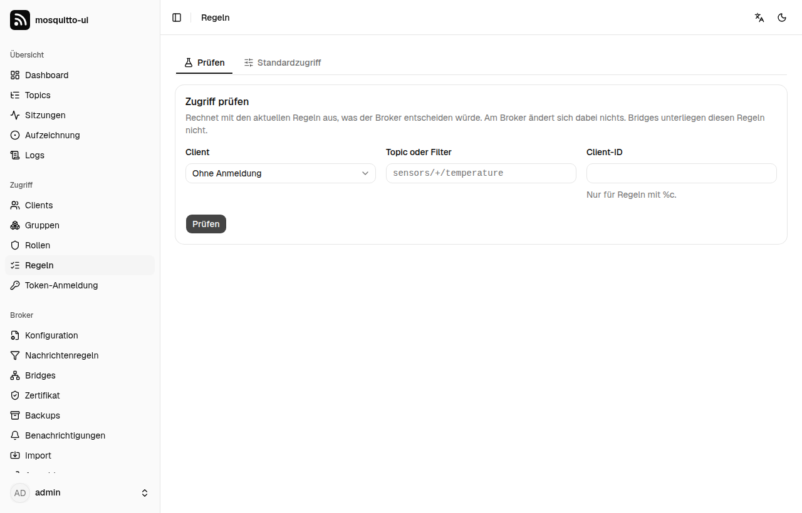
- ACL-Tester: Client und Topic eingeben, die Seite sagt für Publizieren, Empfangen, Abonnieren und Abbestellen, ob es geht und welche Regel entscheidet.
- Standardzugriff für alles, was keine Regel trifft. Eine Änderung gilt sofort für alle.
- Gruppe für anonyme Clients: deren Rollen bekommen Clients ohne Anmeldung, nur mit
allow_anonymous true.
Token-Anmeldung
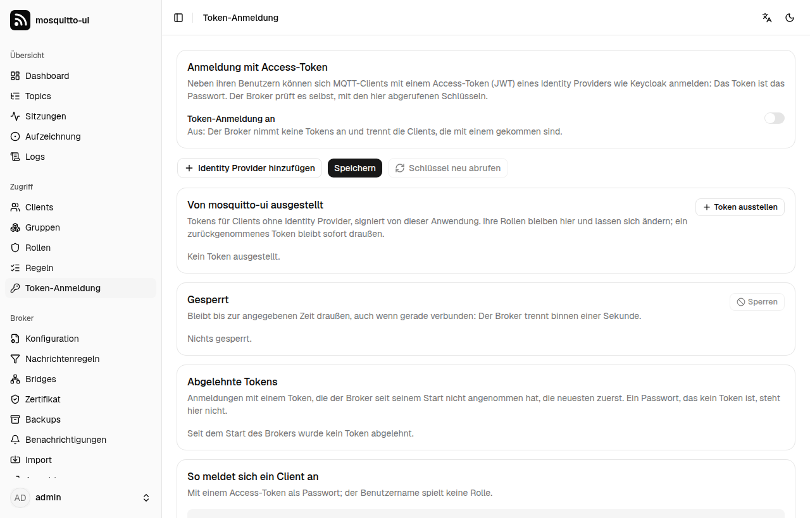
- Clients melden sich mit einem Access-Token (JWT) als Passwort an, z. B. von Keycloak. Der Broker prüft Signatur, Aussteller, Audience und Ablauf selbst.
- Je Identity Provider: Aussteller, Audience, Claim für den Benutzernamen und die Gruppen, welche Gruppen welche Rollen bekommen, Client-ID binden.
- Von mosquitto-ui ausgestellt: Tokens für Geräte ohne Identity Provider, mit Rollen, die sich später ändern lassen; zurücknehmen wirkt sofort.
- Gesperrt: Benutzer, Subjekt oder ein einzelnes Token bis zu einer Zeit draußen halten. Abgelehnte Tokens mit Grund.
- Ausführlich mit Keycloak:
docs/token-login-keycloak.md.
Konfiguration
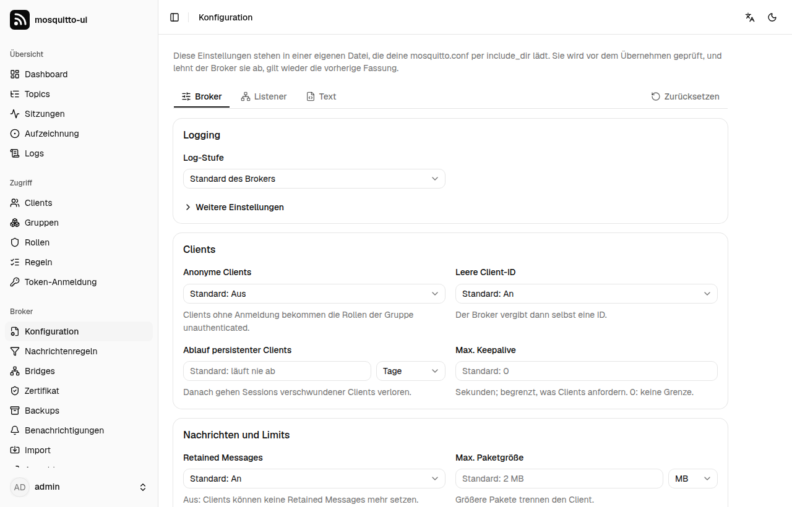
- Broker: Logging (
log_type; „Aus“ schaltet das ganze Log ab), Clients (anonym, persistente Sitzungen, Keepalive), Nachrichten und Limits,$SYS. - Listener: weitere Ports, TLS mit dem Zertifikat der UI, Websockets, PROXY-Protokoll.
- Text: die Datei der UI direkt bearbeiten.
- Vor dem Übernehmen zeigt die UI, was sich ändert und ob neu geladen (Clients bleiben) oder neu gestartet wird (alle trennen kurz).
- Zurücksetzen: gewählte Teile auf den Stand einer neuen Installation, nach Eingabe von
RESET.
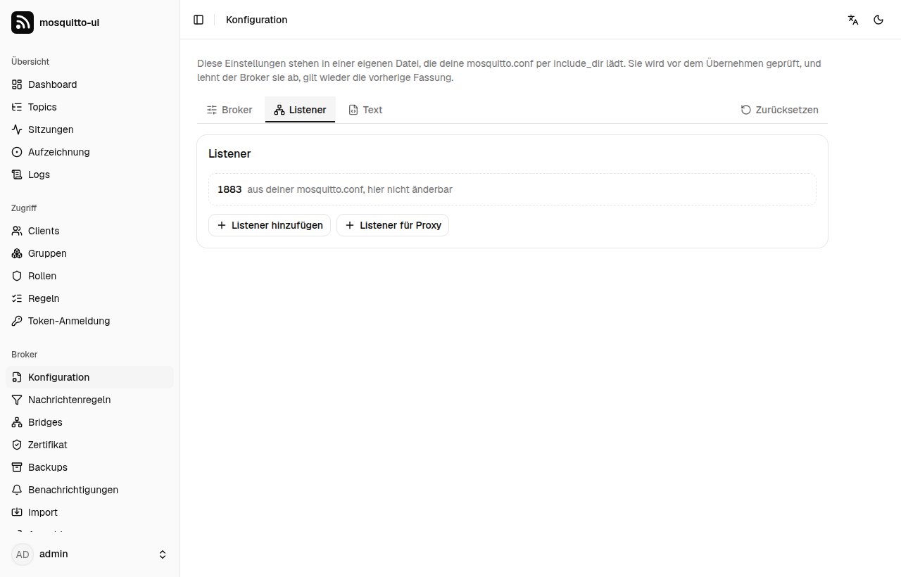
mosquitto.conf und die der UI.Nachrichtenregeln
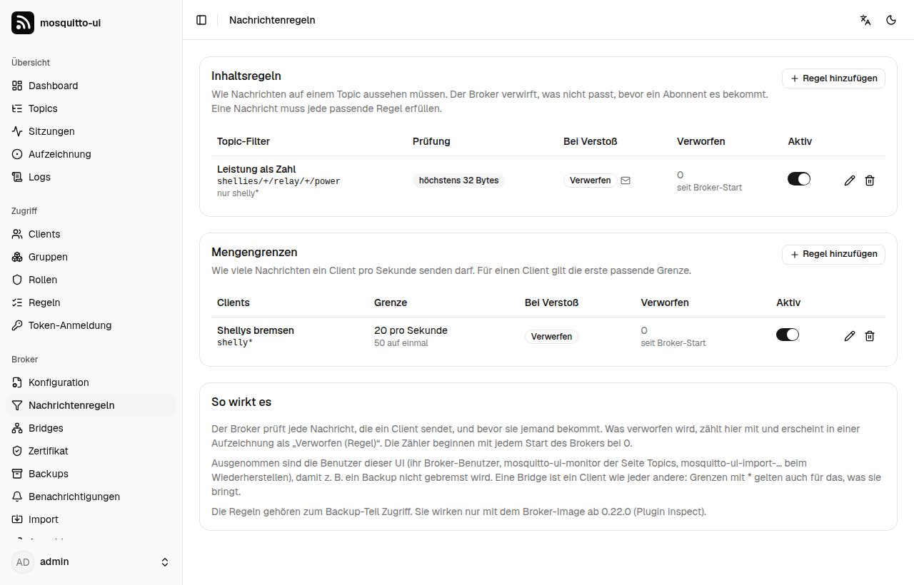
- Inhalt: was Nachrichten auf einem Topic sein müssen: gültiges JSON, höchstens so groß, Pflichtfelder mit Typ.
- Menge: wie viele Nachrichten ein Client senden darf (je Sekunde und Spitze).
- Was nicht passt, verwirft der Broker, bevor jemand es bekommt; auf Wunsch trennt er den Client oder die UI schickt eine Mail.
Bridges und Victron
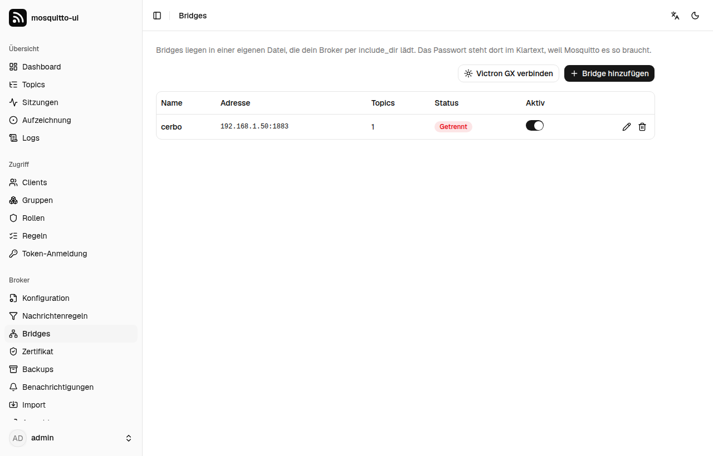
- Verbindungen zu anderen Brokern, mit Topics je Richtung (
in,out,both), Präfixen, Zustand und Warnungen bei Schleifen. - Victron GX verbinden richtet eine Bridge in einem Schritt ein, nur lesend oder in beide Richtungen; mit Venus OS ab 3.80 über das Pairing (Settings → Integrations → MQTT Devices, 120 Sekunden).
- Die UI hält den GX wach (Keepalive alle 30 Sekunden). Läuft die UI nicht, kommen nach einer Minute keine Werte mehr.
- Abschalten behält eine Bridge in der Datei, ohne Neustart.
Zertifikat
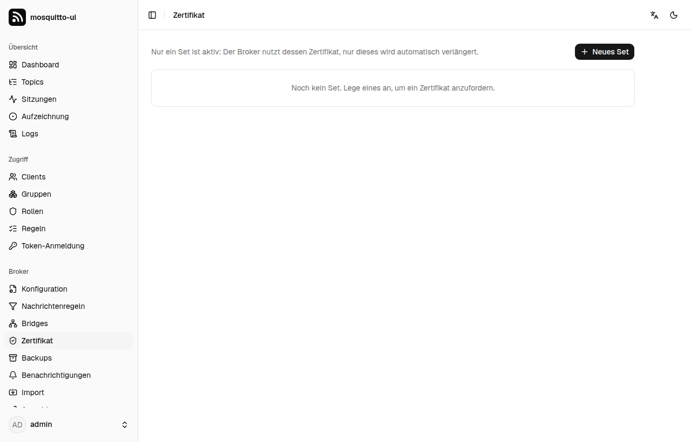
- Bestellt per ACME mit DNS-Challenge über acme-dns oder die PowerDNS-API. CAs: Let's Encrypt (erst Staging!), ZeroSSL, Google Trust Services, jede andere per Adresse.
- Zertifikate in Sets (z. B. Staging und Produktion), eines ist aktiv und verlängert sich im letzten Drittel seiner Laufzeit selbst.
- TLS-Listener automatisch einrichten legt beim ersten Zertifikat den Listener auf 8883 an (einmal Neustart). Verlängerungen kommen per Reload, Clients bleiben verbunden.
- Den Schlüssel bekommt nur der Broker; die UI kann ihn nicht zurücklesen.
Backups
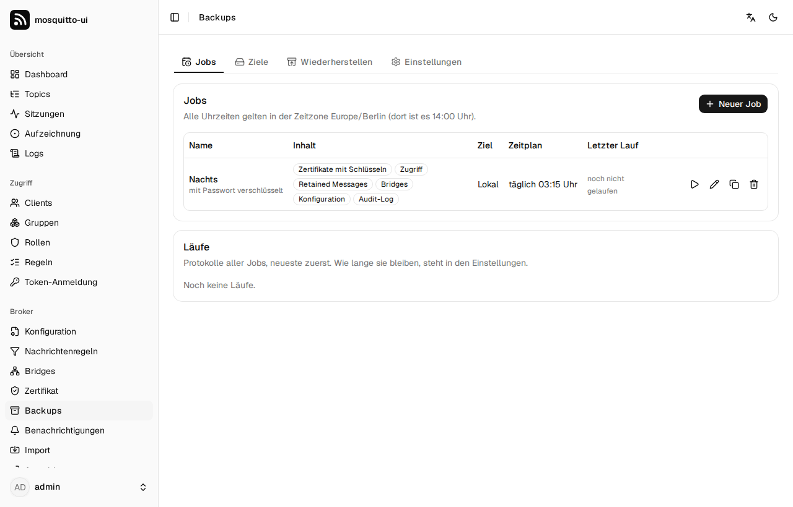
- Ziele: SFTP, FTP/FTPS, S3, ein Verzeichnis, E-Mail. Jobs: was, wohin, wann (täglich, wöchentlich, monatlich, von Hand), verschlüsselt mit Passwort oder GPG.
- Teile: Zugriff, Konfiguration, Bridges, Zertifikate, Retained Messages, Protokoll, Backup-Einstellungen.
- Wiederherstellen von einem Ziel oder einer hochgeladenen Datei; ersetzt die gewählten Teile und startet den Broker neu. Archive sind mit dem Secret Key signiert.
- Verschlüsselte Backups lassen sich auch ohne UI öffnen:
openssl enc -d -aes-256-cbc -pbkdf2 -iter 600000 -md sha256 -in FILE.zip.enc -out FILE.zip.
Benachrichtigungen
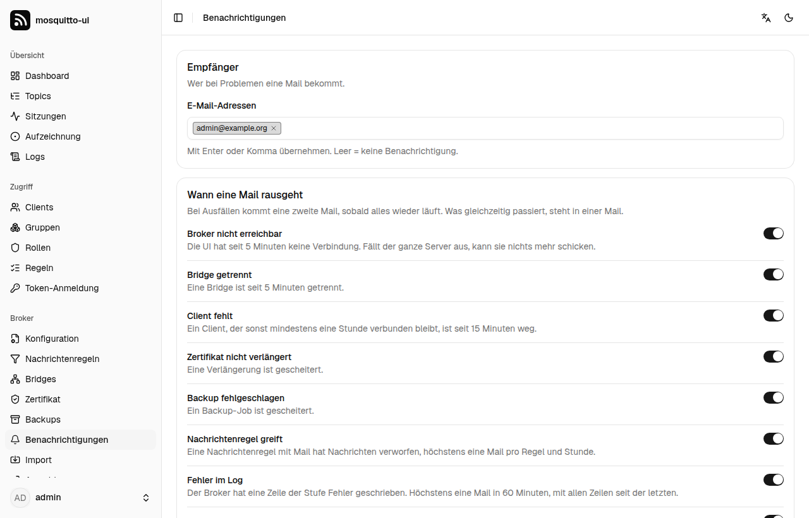
| Wann | |
|---|---|
| Broker nicht erreichbar | die UI hat seit 5 Minuten keine Verbindung |
| Bridge getrennt | eine Bridge ist seit 5 Minuten getrennt |
| Client fehlt | ein Client, der sonst lange verbunden ist, ist seit 15 Minuten weg; Ausnahmen per Name |
| Zertifikat, Backup | Verlängerung bzw. Backup gescheitert |
| Nachrichtenregel | eine Regel mit Mail hat verworfen, höchstens einmal pro Stunde |
| Fehler im Log | der Broker schrieb eine Zeile der Stufe Fehler, höchstens eine Mail pro Stunde |
| Viele abgelehnte Anmeldungen | 10 in 10 Minuten, mit Client-IDs und Adressen |
Bei Ausfällen kommt eine zweite Mail, sobald alles wieder läuft. Fällt der ganze Server aus, kann die UI nichts schicken: dafür
/q/health von außen prüfen.
Import
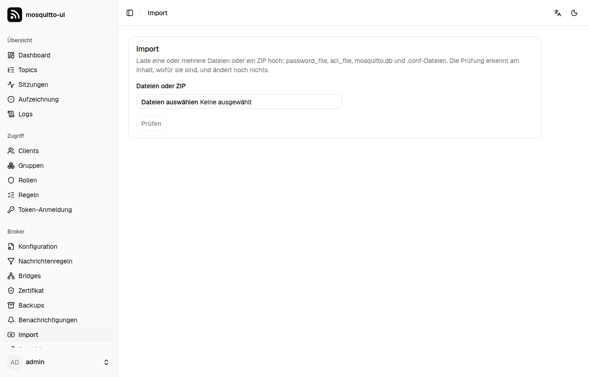
- Für den Umzug:
password_file,acl_file,mosquitto.conf/conf.d,mosquitto.db, einzeln oder als ZIP. - Die Prüfung erkennt jede Datei am Inhalt und zeigt eine Vorschau, ohne etwas zu ändern. Dann die Teile wählen.
- Passwort-Hashes werden übernommen, Geräte behalten ihre Passwörter. Jeder Benutzer bekommt eine Rolle
imported-<Benutzer>.
Anmeldung
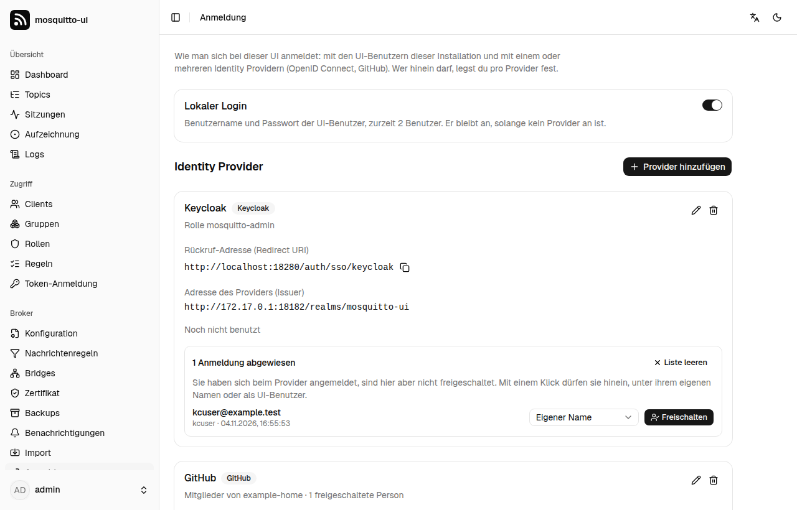
- Lokaler Login: an oder aus. Aus geht er erst, wenn ein Provider an ist, und der letzte Provider geht erst aus, wenn der lokale Login an ist. So bleibt immer ein Weg hinein.
- Jeder Provider zeigt seine Rückruf-Adresse zum Kopieren, die Adresse des Providers, wer hinein darf und wann er zuletzt benutzt wurde.
- Anmeldungen abgewiesen: wer sich beim Provider angemeldet hat, aber keine Regel erfüllt, mit den Rollen aus dem Token. Freischalten lässt die Person mit einem Klick hinein, unter eigenem Namen oder als einer der UI-Benutzer.
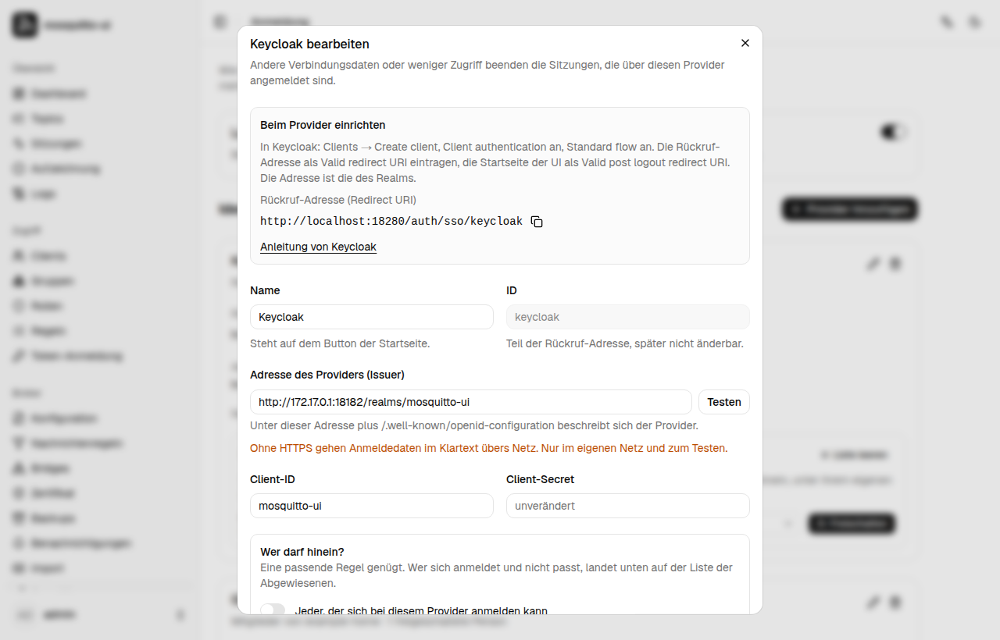
Wer darf hinein? Eine passende Regel genügt:
- Jeder, der sich beim Provider anmelden kann: wenn der Provider selbst festlegt, wer den Client benutzen darf. Nicht bei Google, GitHub oder Apple, dort hat jeder ein Konto.
- Rollen oder Gruppen aus dem Token, z. B.
mosquitto-admin. Wo im Token sie stehen, kennt die Vorlage; unter Erweitert änderbar. - Organisationen und Teams bei GitHub:
orgoderorg/team. - Freigeschaltete Personen: E-Mail-Adresse,
*@example.orgfür eine ganze Domain, oder Benutzername. Nur bestätigte E-Mail-Adressen zählen. Mit einem UI-Benutzer daneben gilt die Anmeldung als dieser Benutzer.
Ändern sich die Verbindungsdaten eines Providers oder dürfen weniger hinein, enden seine Sitzungen; ein neuer Name oder mehr Freigeschaltete
lassen sie stehen. Abmelden meldet auch beim Provider ab, wenn er das kann. Details: docs/anmeldung.md.
UI-Benutzer
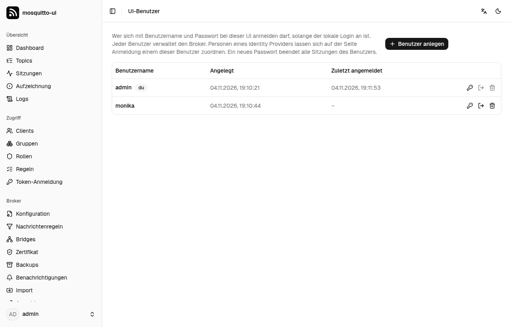
Wer sich mit Passwort bei der UI anmelden darf: anlegen, Passwort setzen (beendet die Sitzungen des Benutzers), Sitzungen beenden, löschen. Den eigenen und den letzten Benutzer kann man nicht löschen. Auch wenn der lokale Login aus ist, lassen sich ihnen auf der Seite Anmeldung Personen eines Providers zuordnen. Diese Benutzer haben nichts mit den MQTT-Clients zu tun.
Protokoll
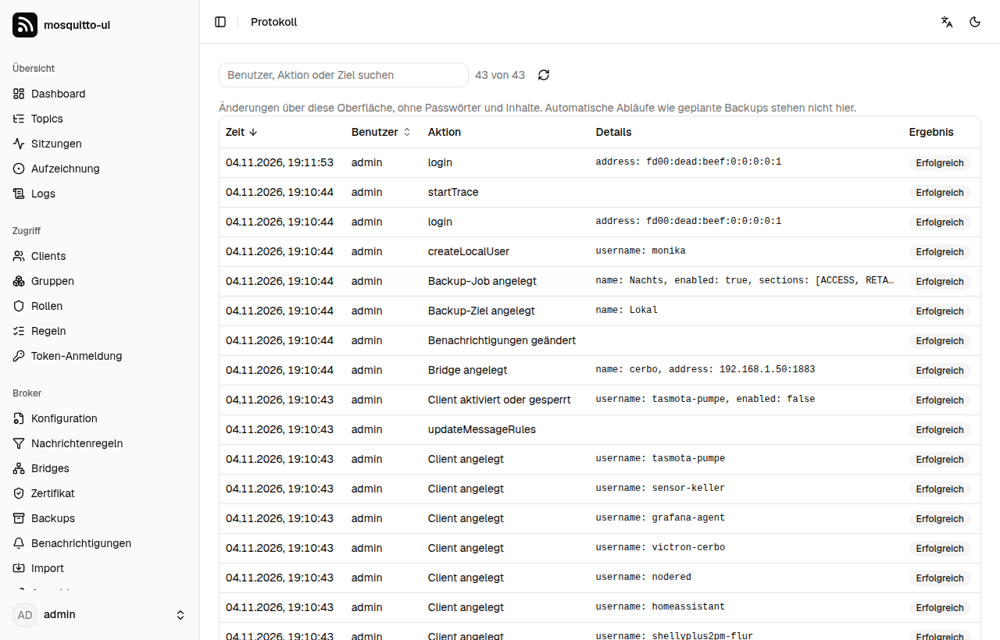
Jede Änderung über die UI mit Benutzer, Zeit und Ergebnis, dazu Anmeldungen (mit Provider), abgewiesene Anmeldungen und Fehlversuche des lokalen Logins. Passwörter, Schlüssel und Werte von Nachrichten stehen nie darin. Die letzten 20 000 Einträge, im Backup als eigener Teil.
Am Handy
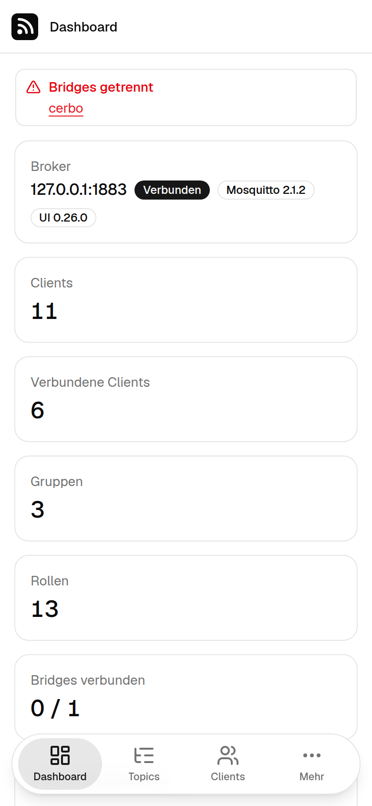
Am Handy führt eine Leiste unten zu den wichtigsten Seiten, Mehr zum Rest, zu Sprache, Darstellung und Handbuch. Über HTTPS lässt sich die UI als App auf den Startbildschirm legen.
Betrieb
Updates
| Setup | Update |
|---|---|
| Docker | MOSQUITTO_UI_VERSION in .env setzen, dann docker compose pull && docker compose up -d. Ein neues Broker-Image startet den Broker neu. |
| ohne Docker | neuen Tarball auspacken, sudo ./install.sh. Der Broker startet nur neu, wenn sich Mosquitto, die Plugins oder der Agent geändert haben. Zurück: den alten Tarball genauso installieren. |
UI und Broker-Image gehören zusammen und haben dieselbe Version.
Sicherung und Umzug
- Ein Backup-Job mit allen Teilen deckt Benutzer, Rechte, Konfiguration, Bridges, Zertifikate und Retained Messages ab.
- Zusätzlich den Secret Key aufheben. UI-Benutzer und Identity Provider gehören zum Teil Zugriff; beim Wiederherstellen kommen fehlende UI-Benutzer dazu, und ob der lokale Login an ist, bleibt wie auf dem neuen Server.
- Umzug, auch von Docker zu systemd: Backup erstellen, neu installieren (ohne Docker mit
--no-start), denselbenMOSQUITTO_UI_SECRET_KEYeintragen, starten, Backup auf der Seite Backups wiederherstellen.
Fehlersuche
| Was man sieht | Woran es liegt |
|---|---|
Gerät verbindet sich nicht, im Log disconnected: not authorised | Falsches Passwort, Client inaktiv oder unbekannt. Mosquitto 2.1 schreibt für alle drei dasselbe. |
| Gerät verbindet sich, bekommt aber nichts | Abo verweigert: Regel fehlt oder die Rolle erlaubt keine Wildcard-Abos. ACL-Tester und Aufzeichnung zeigen es. |
| Seite Logs bleibt leer | Log-Stufe „Aus“ unter Konfiguration, oder log_dest topic fehlt in einer eigenen mosquitto.conf. |
| „Keine Verbindung zum Broker“ | Broker läuft nicht oder MOSQUITTO_PASSWORD passt nicht mehr zum Benutzer admin. |
| Nach der Anmeldung beim Provider zurück auf der Startseite mit „Der Provider ist nicht erreichbar oder hat die Anmeldung abgelehnt“ | Der Provider antwortet der UI nicht oder lehnt ab. Im Log der UI steht Login at /auth/sso/… failed mit Grund; auf der Seite Anmeldung die Adresse Testen. Fehler beim Provider selbst: meist die Rückruf-Adresse. |
| Kein Broker-Benutzer nach dem ersten Start | Passwort kürzer als 12 Zeichen. Datenvolume leeren und mit längerem Passwort neu starten. |
| Anmeldung leitet im Kreis | Proxy setzt X-Forwarded-Proto nicht oder ist nicht als vertrauenswürdig eingetragen. |
| Topics oder Logs laufen nicht live | Proxy puffert: bei nginx proxy_buffering off. |
| Ohne Docker: Port 1883 belegt | Mosquitto der Distribution läuft: sudo systemctl disable --now mosquitto. |
Logs: docker compose logs mosquitto mosquitto-ui bzw. journalctl -u mosquitto-ui-broker -u mosquitto-ui.
Referenz
Umgebungsvariablen
| Variable | Bedeutung | Standard |
|---|---|---|
MOSQUITTO_HOST, MOSQUITTO_PORT | Broker | localhost, 1883 |
MOSQUITTO_USERNAME, MOSQUITTO_PASSWORD | Benutzer der UI am Broker | (nötig) |
MOSQUITTO_TLS | TLS zum Broker | false |
MOSQUITTO_UI_AUTH | local: lokaler Login immer an (Notzugang) | oidc |
MOSQUITTO_UI_LOCAL_AUTH_INITIAL_PASSWORD | erstes Passwort von admin | erzeugt |
MOSQUITTO_UI_LOCAL_AUTH_SESSION_TIMEOUT, …_SESSION_MAX | Ende der Sitzung ohne Anfrage, nach Anmeldung | PT8H, P7D |
QUARKUS_OIDC_AUTH_SERVER_URL, …_CLIENT_ID, …_CREDENTIALS_SECRET | vor 0.26: werden beim ersten Start ein Provider, danach nicht mehr gelesen | |
MOSQUITTO_UI_ADMIN_ROLE | Rolle, die der übernommene Provider verlangt | mosquitto-admin |
MOSQUITTO_UI_SECRET_KEY | Schlüssel für Geheimnisse und Signatur der Backups | erzeugt im Statusverzeichnis |
MOSQUITTO_UI_STATE_DIR | Daten der UI | /var/lib/mosquitto-ui |
MOSQUITTO_UI_SHARED_DIR, MOSQUITTO_UI_BROKER_SHARED_DIR | geteiltes Verzeichnis, für die UI und wie der Broker es sieht | /mosquitto/ui |
MOSQUITTO_UI_CERT_DIR | Zertifikate, wie der Broker sie sieht | /mosquitto/data/certs |
MOSQUITTO_UI_BACKUP_LOCAL_ROOT | lokale Backup-Ziele nur darunter | /backups |
MOSQUITTO_UI_BROKER_LOG_KEEP | behaltene Log-Zeilen | 10000 |
MOSQUITTO_UI_NOTIFICATIONS_REJECTED_LOGINS, …_REJECTED_WINDOW | Schwelle der Mail zu abgelehnten Anmeldungen | 10, PT10M |
QUARKUS_HTTP_PORT, QUARKUS_HTTP_HOST | Port und Adresse der UI | 8080, alle |
QUARKUS_HTTP_PROXY_PROXY_ADDRESS_FORWARDING, …_ALLOW_X_FORWARDED, …_TRUSTED_PROXIES | hinter einem Reverse Proxy | aus |
Pfade und Ports
| Was | Docker | ohne Docker |
|---|---|---|
| Konfiguration des Brokers | im Image, eigene per Mount | /etc/mosquitto-ui/mosquitto.conf |
| Einstellungen der UI | .env | /etc/mosquitto-ui/mosquitto-ui.env |
| Benutzer, Rechte, Retained, Zertifikate | Volume data | /var/lib/mosquitto |
| Daten der UI | Volume state | /var/lib/mosquitto-ui/state |
| Geteiltes Verzeichnis | Volume shared | /var/lib/mosquitto-ui/shared |
| Lokale Backups | Volume backups | /var/lib/mosquitto-ui/backups |
| Programm | Images | /opt/mosquitto-ui/current, /usr/local/sbin/mosquitto |
| Port | Wofür |
|---|---|
| 1883 | MQTT |
| 8883 | MQTT über TLS, sobald ein Zertifikat aktiv ist |
| 8080 | UI (HTTP), besser nur für den Reverse Proxy |
Ausführliches zu einzelnen Themen liegt im Repository unter docs/: Logs, Anmeldung, ohne Docker, Sitzungen und Aufzeichnung,
Nachrichtenregeln, Token-Anmeldung mit Keycloak. Das README beschreibt alles auf Englisch.